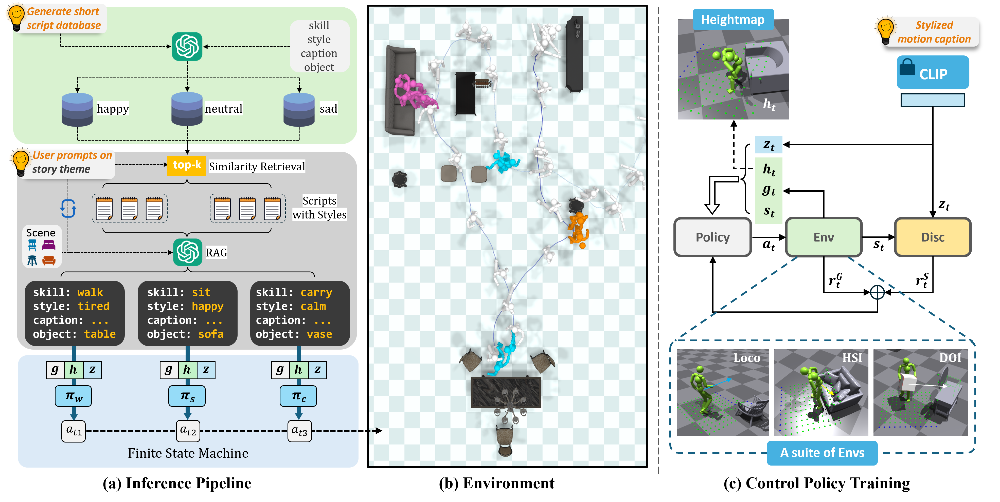

Abstract
Simulating stylized human-scene interactions (HSI) in physical environments is a challenging yet fascinating task. Prior works emphasize long-term execution but fall short in achieving both diverse style and physical plausibility. To tackle this challenge, we introduce a novel hierarchical framework named SIMS that seamlessly bridges high-level script-driven intent with a low-level control policy, enabling more expressive and diverse human-scene interactions. Specifically, we employ Large Language Models with Retrieval-Augmented Generation (RAG) to generate coherent and diverse long-form scripts, providing a rich foundation for motion planning. A versatile multi-condition physics-based control policy is also developed, which leverages text embeddings from the generated scripts to encode stylistic cues, simultaneously perceiving environmental geometries and accomplishing task goals. By integrating the retrieval-augmented script generation with the multi-condition controller, our approach provides a unified solution for generating stylized HSI motions. We further introduce a comprehensive planning dataset produced by RAG and a stylized motion dataset featuring diverse locomotions and interactions. Extensive experiments demonstrate SIMS's effectiveness in executing various tasks and generalizing across different scenarios, significantly outperforming previous methods.
Video
Demo Gallery
Demo 2
Demo 3
Demo 4
Demo 5
Demo 6
Demo 7
Skills
Carry
Idle
Walk
Sit
Lie
Pipeline

BibTeX
@inproceedings{wang2025sims,
title={SIMS: Simulating Stylized Human-Scene Interactions with Retrieval-Augmented Script Generation},
author={Wang, Wenjia and Pan, Liang and Dou, Zhiyang and Mei, Jidong and Liao, Zhouyingcheng and Lou, Yuke and Wu, Yifan and Yang, Lei and Wang, Jingbo and Komura, Taku},
booktitle={ICCV},
year={2025}
}